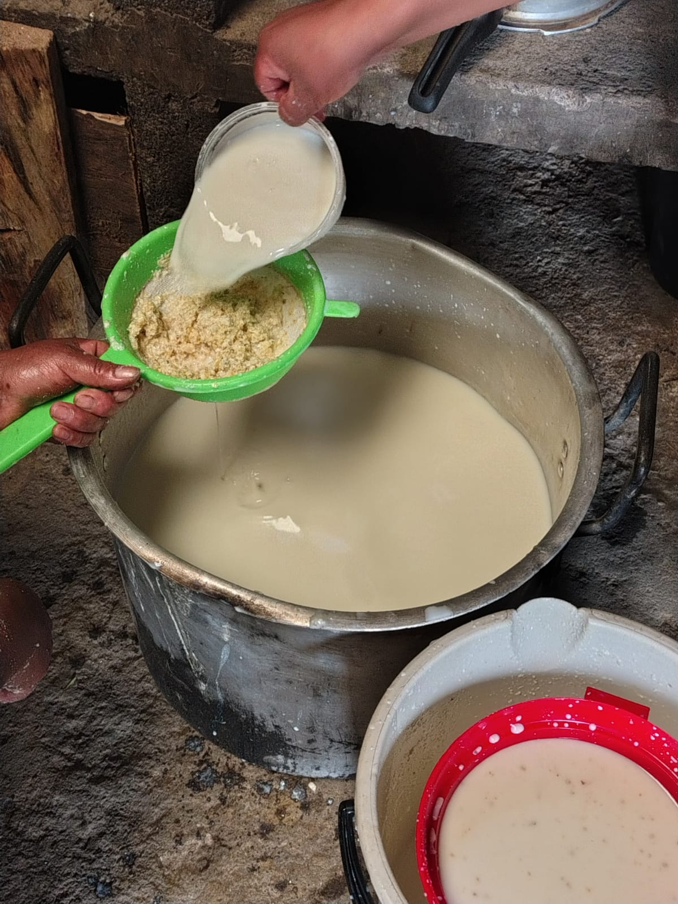
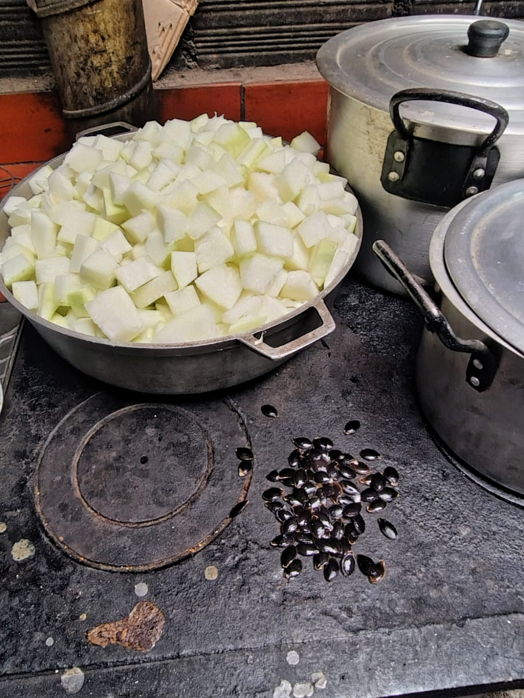
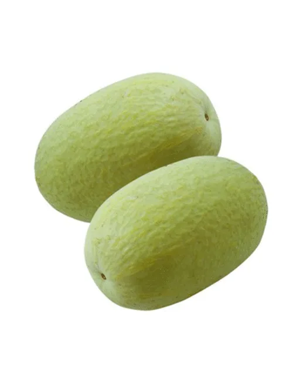

Bienvenidos a Rioblanco
Rioblanco es una región que forma parte del municipio de Sotará, en el departamento del cauca, Colombia. Es un luugar especialpor sus paisajes, su comunidad y las tradiciones que hacen parte de su identidad.
En esta pagina conoceremos algunos aspectos de Rioblanco, su cultuta, su gastronomia y sus paisajes.
Gastrononmía de la región
La gastronomía es una parte importante de la identidad de cada regiom. Sus preparaciones tradicionales reflejan las costumbres y los conocimientos de sus habitantes.

Comidas tradicionales
Los alimentos y preparaciones tradicionales hacen parte de la cultura y de la vida cotidiana de las familias.

sabores de casa
La cocina familiar conserva recetas y conocimientos que se comparten entre generaciones.

Productos del campo
Los productos agricolas de las region son importantes para la alimentacion y la economia de sus habitantes.

Productos del campo
Los productos agrícolas de la región son importantes para la alimentación y la economía de sus habitantes.
Paisajes y naturaleza
Rioblanco se encuentra en un entorno natural característico de la región andina del Cauca. Sus paisajes rurales y montañosos hacen parte de la belleza de este territorio.
Conocer y cuidar la naturaleza permite conservar los recursos y valorar la riqueza de nuestra región.